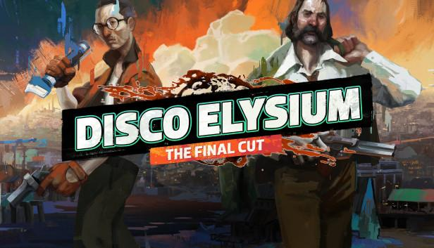
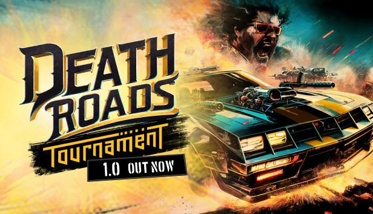

/* Professionally I’m a software developer, up until now focused on game development. Some titles worth mentioning are highlighted here, but the main focus of this page is activity other than that. For more professional-code info feel free to check out my linked-in profile. */
Unreleased MMORPG
For the past year I've worked on MMORPG game, though it's not released yet. More info soon.
Disco Elysium
Award winning narrative RPG game. I've worked mostly on UI, UI animations, polishing and fixing the game before the release.
Death Roads: Tournament
Indie deckbuilder game. I've worked on the UI and editor tools for designers.
Porting work
I was involved in couple of game portings - from PC to consoles like PS4, Xbox or Nintendo Switch. Alongside proting work, game polishing and fixing was usually needed.
Itch.io
Couple of little games made on gamejams.